Guida d'utilizzo
Dal link alla slide
in un minuto
Crea QR code personalizzati e citazioni scientifiche con un QR che porta al paper, pronti per le tue slide.
Guida d'utilizzo
Crea QR code personalizzati e citazioni scientifiche con un QR che porta al paper, pronti per le tue slide.
Indice
Il QR Lab trasforma un link, un contatto o una rete Wi-Fi in un QR code con lo stile delle tue slide, e un articolo scientifico in una citazione con un QR che porta al paper.
Nel browser
niki977.github.io/ultraspeaker-qr-lab, su computer e telefono. I QR si scaricano in PNG o SVG e si usano in PowerPoint, Keynote o in un documento; le citazioni si copiano.
In PowerPoint
Scheda Home → gruppo The Ultraspeaker → QR Lab. Il pannello si apre a destra e inserisce QR e citazioni nella slide selezionata.
In arrivo
Il pannello di PowerPoint è in prova e sarà disponibile a breve. Questa guida lo descrive già per intero.
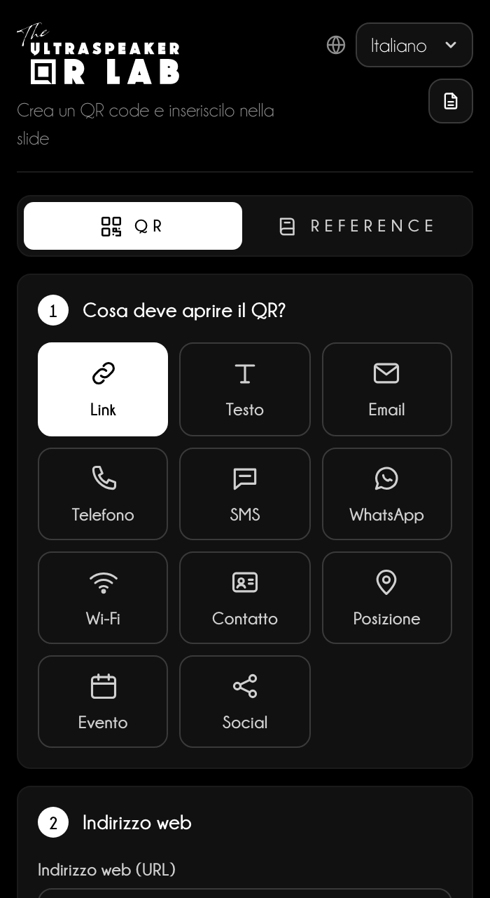
Cosa resta sul dispositivo
Lingua, design, QR recenti, modelli e riferimenti restano nella memoria del browser; in PowerPoint i riferimenti restano nel file. La password del Wi-Fi non viene mai salvata.
A sinistra i passi, a destra l'anteprima, sempre visibile.
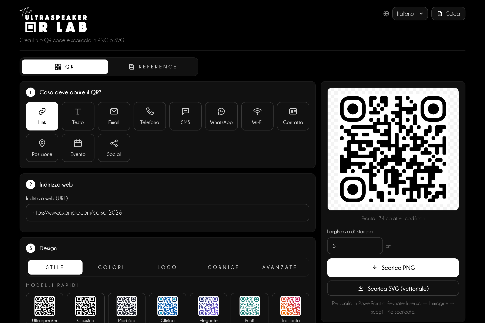
1234567Un QR verso la pagina del tuo corso, per la slide finale del talk.
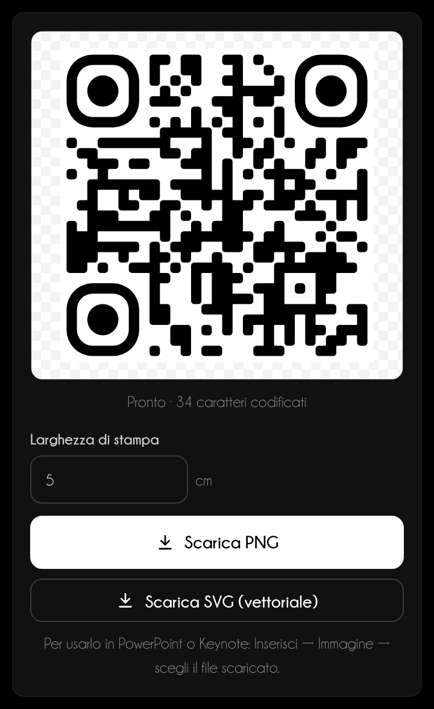
Undici tipi: ognuno compone il contenuto nel formato che il telefono riconosce.
| Tipo | Cosa succede quando lo inquadri |
|---|---|
| Link | Apre una pagina web. |
| Testo | Mostra un testo breve. |
| Prepara un messaggio con destinatario, oggetto e testo. | |
| Telefono e SMS | Chiama o prepara un SMS. |
| Apre una chat; per i cellulari italiani aggiunge il prefisso 39. | |
| Wi-Fi | Collega alla rete con nome, sicurezza e password. |
| Contatto | Salva un biglietto da visita in rubrica. |
| Posizione | Apre la mappa da un indirizzo o da coordinate. |
| Evento | Aggiunge un evento al calendario. |
| Social | Apre un profilo: basta il nome utente. |
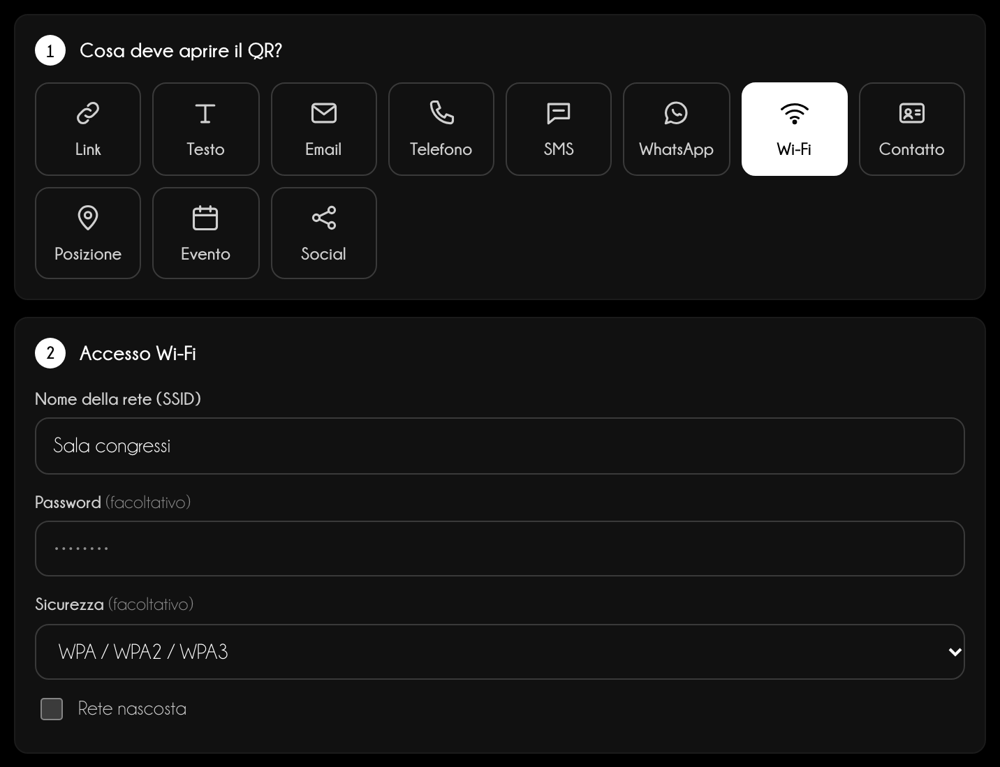
Wi-Fi
La password serve solo a creare il codice: non viene mai salvata, nemmeno nei QR recenti.
Il design cambia l'aspetto, non il contenuto: prova sempre la scansione con il telefono.
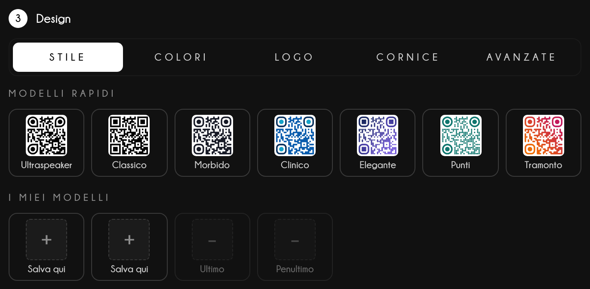
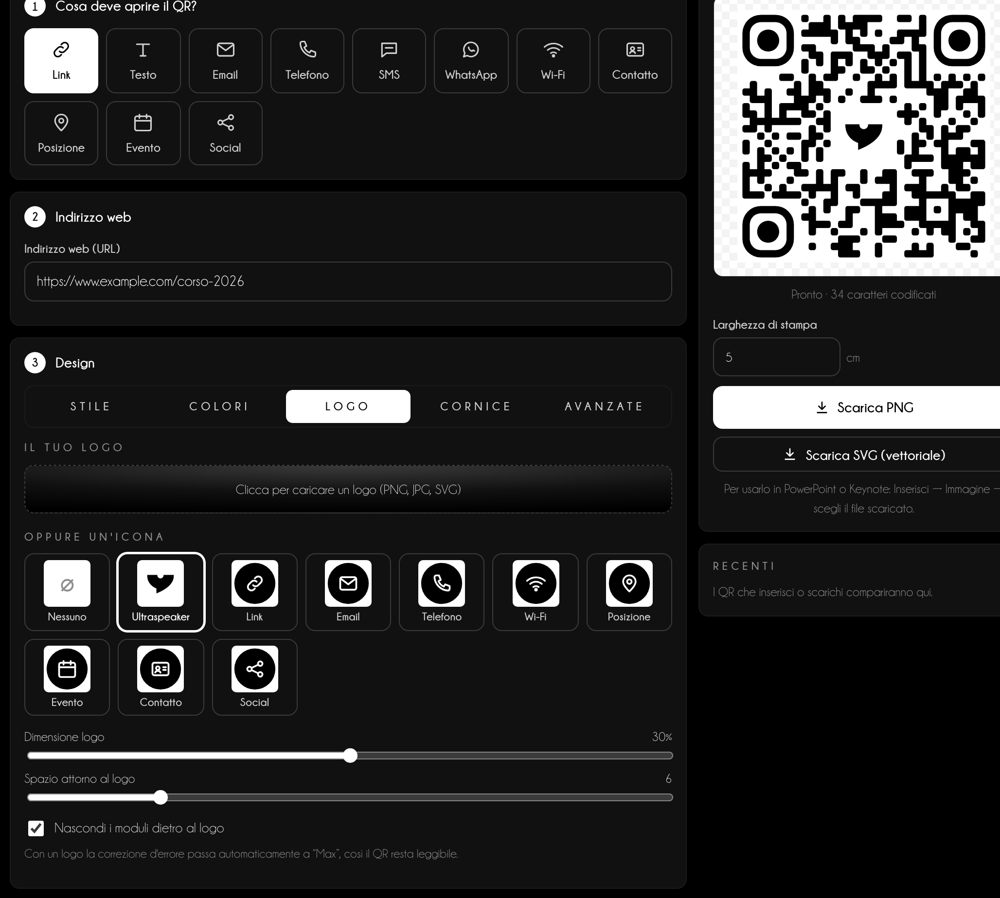
Nella sezione Reference un DOI, un PMID o qualche parola del titolo diventano una citazione con un QR che apre l'articolo.
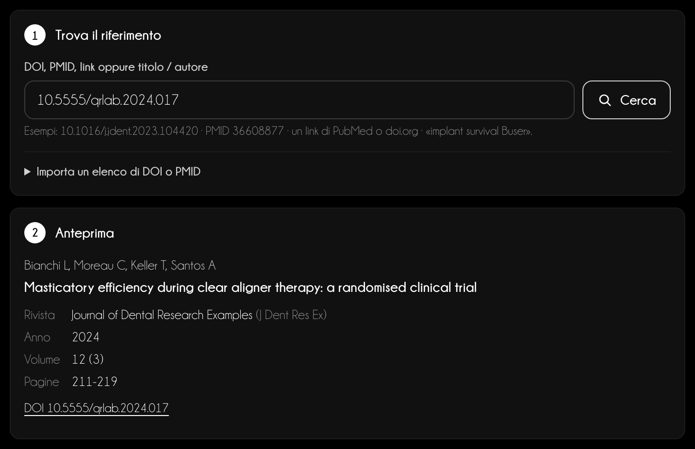
12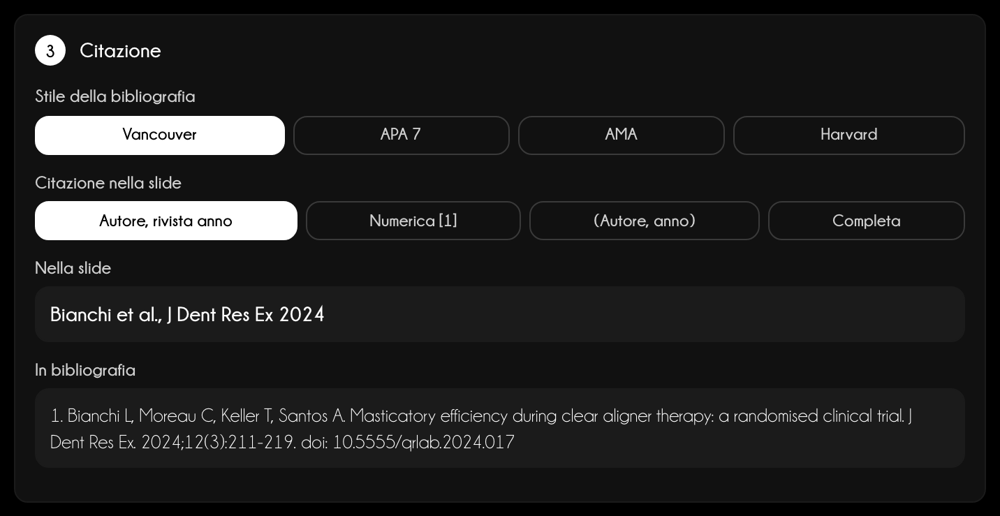
Fonti
Crossref, PubMed (NCBI) e Unpaywall, interrogati direttamente dal tuo dispositivo. Gli avvisi sono un aiuto: verifica sempre le citazioni importanti alla fonte.
Ogni articolo inserito o aggiunto entra in Riferimenti della presentazione: da lì nascono la numerazione, le slide finali e il PDF per il pubblico.
Il PDF della bibliografia
Scarica PDF chiede Titolo della lecture (obbligatorio), speaker e data, e cosa mettere accanto a ogni voce: testo, link, QR o entrambi. Il PDF ha pagine bianche, elenco senza numeri nell'ordine scelto e «powered by The Ultraspeaker» in fondo. Sul telefono si condivide; dal pannello di PowerPoint si apre nel browser.
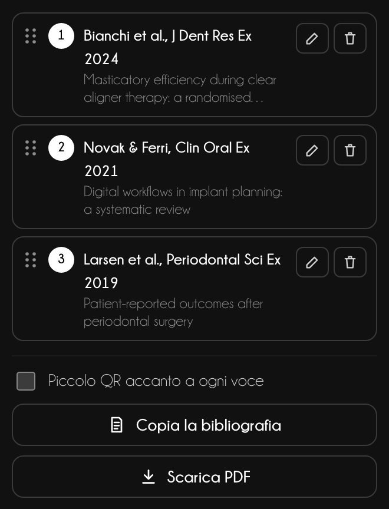
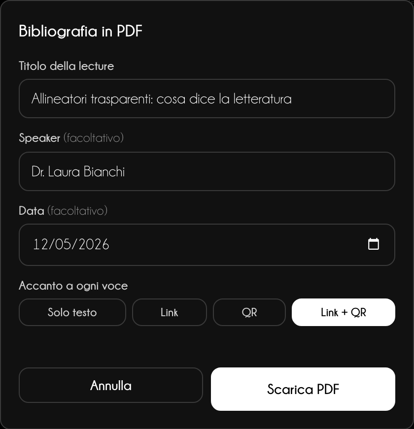
Lo stesso QR va nella slide, in Keynote o in stampa: cambia solo il formato.
Versione web
Scarica PNG crea un'immagine a 300 dpi per la Larghezza di stampa indicata; Scarica SVG (vettoriale) resta nitido a ogni dimensione. Sul telefono Salva o condividi apre il menu di condivisione: Foto, WhatsApp, Mail. In Reference il pulsante principale copia la citazione.
PowerPoint
Scegli PNG o Vettoriale e la Larghezza in slide, poi Inserisci nella slide. Per le citazioni scegli un layout, cosa inserire (Citazione + QR, Solo citazione, Solo QR), posizione, font e colore: testo e QR vengono raggruppati in basso nella slide.
In arrivo
Il pannello di PowerPoint è in prova e sarà disponibile a breve. Questa guida lo descrive già per intero.
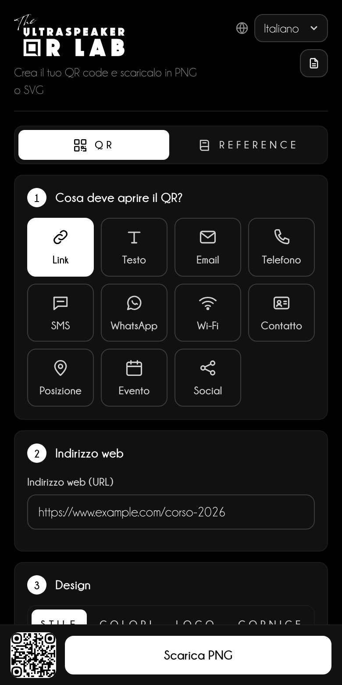
Un QR funziona solo se il pubblico riesce a inquadrarlo dal proprio posto.
Consiglio da speaker
Lascia il QR sullo schermo almeno 10 secondi e invita a voce: «Inquadrate il codice per scaricare le slide». Senza invito, quasi nessuno prende il telefono.
| Sala | Distanza dall'ultima fila | Lato del QR sullo schermo |
|---|---|---|
| Aula piccola | fino a 10 m | almeno 1/6 dell'altezza della slide |
| Sala congressi | 10–25 m | almeno 1/4 dell'altezza |
| Plenaria | oltre 25 m | almeno 1/3, da solo sulla slide |
Citazioni
Metti la citazione in basso a sinistra, 14–16 pt, in grigio: si legge senza rubare l'attenzione. Il PDF della bibliografia, inviato dopo il talk, vale più di dieci slide di riferimenti.
Assistenza
Scrivi a info@theultraspeaker.com indicando il computer e la versione di PowerPoint.

Knowledge is not enough.
From expert to Ultraspeaker.
theultraspeaker.com · info@theultraspeaker.com